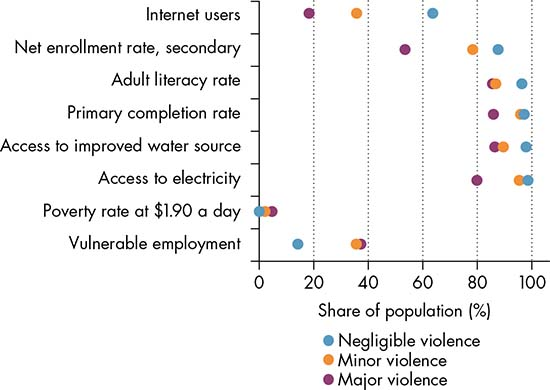
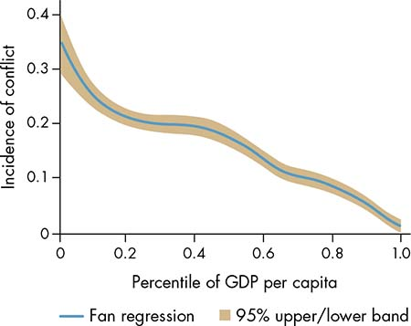
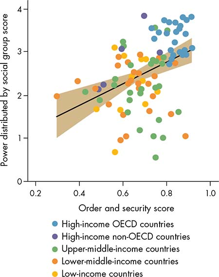
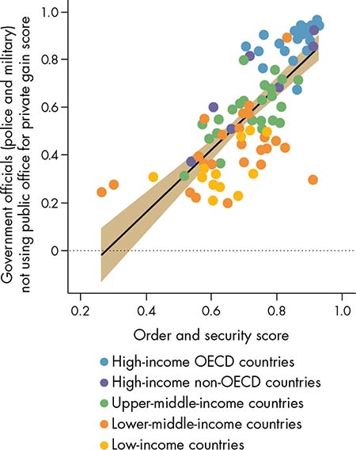
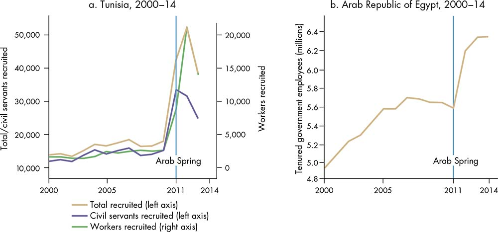
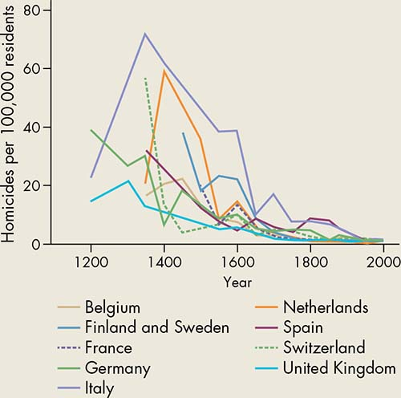

Sometime around 1775 BCE, Zimri-Lim, the king of the ancient Mesopotamian city of Mari in today’s Syrian Arab Republic, wrote the world’s earliest account—engraved on a clay tablet—of the use of arbitration and restitution to settle a dispute between two of his vassals. He rebuked one of them: “You have raided his country. Everything you took, gather it together and return it” (Munn-Rankin 1956, 95). On another occasion, the same king negotiated a power-sharing agreement over a contested city with his more powerful rival, King Hammurabi of Babylon. Bargaining extended over several years—“Remove [that city] from the treaty tablet and I shall commit myself!” offered Hammurabi at one point—but no agreement could be reached, a consequence of the uneven balance of power between the two kingdoms (Heimpel 2003, 379). Violence ensued, and in 1759 BCE the king of Babylon destroyed Mari, boasting that he had “turned the land into rubble heaps and ruins” and displaced its entire population (Heimpel 2003, 177).
Can dispute settlement, power sharing, restitution, and other forms of governance solve the problem of violence in society? Yes, under certain circumstances. Violence recedes when individuals, groups, and governments have incentives not to use it to pursue their objectives, and when not using it eventually becomes the norm. Institutions create incentives to reach agreements (cooperation) and enforce them (commitment). When institutions of governance—the specific institutions for making and implementing policy—solve cooperation and commitment problems in ways that create incentives not to use violence, security prevails. When they do not, violence prevails. In the absence of cooperation, contending sides walk away from the bargaining table, and citizens do not comply with government rules. When commitment is lacking, warring factions renege on peace agreements, policy makers default on their promises to transfer resources to discontented groups or regions, disputants fail to abide by court judgments, the police abuse citizens instead of protecting them, and violence ensues.
The framework adopted by this Report emphasizes the centrality of three constitutive elements of governance for development: (1) the relative distribution of power among individuals and groups with conflicting preferences; (2) the bargaining arena where conflicting interests are mediated and policy choices are made and implemented; and (3) the barriers to entry to this arena. Accordingly, violent conflict is the result of three types of breakdowns in governance, all rooted in cooperation and commitment problems: (1) the unconstrained power of individuals, groups, and governments; (2) failed agreements between participants in the bargaining arena; or (3) the exclusion of relevant individuals and groups from this arena. Power sharing, resource redistribution, dispute settlement, and sanctions and deterrence have long been identified as potential ways governance can prevent, reduce, or end violent conflict, yet they succeed only when they constrain the power of ruling elites, achieve and sustain agreements, and do not exclude relevant individuals and groups.
Violent conflict is the result of three types of breakdowns in governance: the unconstrained power of individuals, groups, and governments; failed agreements between participants in the bargaining arena; or the exclusion of relevant individuals and groups from this arena.
Security—the security of people—is freedom from violence and the threat of violence (coercion).1 Rather than representing discrete, opposed situations, security and violence are on a continuum. For that reason, this Report measures security as the reduction in the incidence of violence.2 The threat of violence, however, is more difficult to measure. Compounding the measurement challenge is the overlapping and coexis-tence of violence and security.3
The cost of violence to development outcomes is staggering (figure 4.1). In 2015 violence cost the global economy US$14.3 trillion, or 13.4 percent of the global gross domestic product (GDP), and this cost has risen by more than 15 percent since 2008 (IEP 2015). Violent conflict has a negative impact on GDP per capita (figure 4.2). Civil war reduces economic growth by 2.3 percent a year (Collier 2007; Dunne and Tian 2014). Violent crime hinders economic development as well (Dell 2015). A 1.00-point decrease in homicide rates per 100,000 persons is associated with a 0.07–0.29 percentage point increase in GDP per capita growth over the next five years (World Bank 2006).
Figure 4.1 Violence inflicts a high cost on development

Sources: WDR 2017 team, using data from World Bank 2011; World Bank, World Development Indicators (database), 2015; Geneva Declaration Secretariat 2015; UCDP/PRIO 2015.
Note: The figure displays median values for all countries, by level of violence, for which data on development outcomes and violent deaths are available, ranging from 91 countries for poverty ratio data to 170 countries for access to electricity. Vulnerable employment is expressed as a percentage of total employment.
Figure 4.2 Violent conflict is associated with a reduction in GDP per capita

Sources: WDR 2017 team, based on Blattman and Miguel 2010 using data from World Bank, World Development Indicators (database), 2015, and UCDP/PRIO 2015.
Note: Incidence of conflict = number of violent conflicts in a country that led to at least 25 battle deaths in a year, between 1960 and 2015. GDP = gross domestic product.
At the micro level, violence results in changes in household composition, losses in the productive capacities of household members, the destruction of productive assets and livelihoods, and displacement (Ibáñez and Vélez 2008; Justino 2009). Violence and its threat also indirectly impede trade, investment, and growth because of the uncertainty and the loss of trust and cohesion they generate (Knack and Keefer 1997; Zak and Knack 2001). For example, violent conflict directly cost Iraq 16 percent in per capita welfare from April 2011 to April 2014 and Syria 14 percent. However, when the foregone benefits of trade integration between the two countries and their neighbors are taken into account, the total cost of war almost doubles, to 28 percent for Iraq and 23 percent for Syria (Ianchovichina and Ivanic 2016).
In traditional societies, when security was still in the hands of private individuals and groups, the credible threat of violence through retaliation served as a deterrent against violence, and it was the main determinant of order and security.4 The threat of revenge largely helped reduce violence, but security was fragile, and the specter of violence always loomed (Bates 2001; North, Wallis, and Weingast 2009). Similar security arrangements based on deterrence persist in many parts of the developing world (Jacoby and Mansuri 2010).
Modern societies, by contrast, are fundamentally characterized by a concentration of security arrangements in the hands of the state, which has a monopoly over the means of violence and coercion (Weber 1965; Mann 1984). At its core, the state’s monopoly over violence is the outcome of a collective agreement among powerful actors—an elite bargain, really—over who can use violence and when its use is acceptable (Wallis 2016).5 The use of violence and coercion under this agreement is organized by the state, which typically enforces the agreement.
The monopoly over violence is an ideal that few states attain in all places at all times. It is the outcome of complex historical processes that unfold over decades, if not centuries (box 4.1). The elite bargains that give rise to this monopoly are contested, renegotiated, and reasserted every day, everywhere. The capacity—the stock of material and technological and human resources available to the state—to enforce these bargains and deter groups tempted to defect or renege on them is uneven and discontinuous over time and space.
Box 4.1 How modern governance was born offers lessons for today’s “fragile” countries
Today’s governance is the child of yesterday’s violence. From the earliest records of human societies until the modern era, violence has been the norm (Pinker 2011). It was not until violence was constrained by the state that development began to occur on a large scale (North, Wallis, and Weingast 2009). Even the countries that enjoy the highest per capita incomes and most peaceful societies in the world, such as most of Europe, emerged from wars and violent contests for power (Tilly 1985, 1990). They were “fragile states” for most of their historical trajectory.
How these countries made this transition from violence and underdevelopment to security and prosperity reveals intriguing patterns. As commerce expanded in medieval Europe, violence specialists—individuals or groups that procured resources for themselves primarily through violence and coercion—traded the provision of security for financial resources to finance their wars (Braudel 1966). They allowed economic activity to flourish under their protection, founded states, and ceded some power and rights to business and other elites (Duby 1991; Bates 2001). Later, these rights were gradually expanded and eventually conceded to the majority of the population (Acemoglu and Robinson 2006). Constraints on unbridled power and other outcomes of these bargains between elites were formalized into laws. But violence did not disappear—on the contrary, more revenues were available to finance more external wars. It was now monopolized by these emerging states and channeled toward providing law and order, combating crime, and protecting property rights (Bates, Greif, and Singh 2002). Modern governance was born.a
Today, millions of people live under the rule of nonstate armed groups, contemporary equivalents of the medieval violence specialists who gave rise to the western European states.b Wartime institutions—the “rules of the game that result from the interaction between civilians and armed factions”—have created new, enduring realities on the ground, with profound implications for processes of state and nation building in the aftermath of violence (Justino 2016; see also spotlight 4). The relative security of places such as Somaliland provides a compelling illustration of the sustainability of the governance arrangements that arise organically—and without donor intervention—from the bargains struck among armed rebels, business communities, and civilians (Bradbury 2008). These arrangements exemplify the significance of these homegrown rules for the future governance of postwar countries—and the puzzles they pose to the international development community (Weinstein 2004).
Source: WDR 2017 team.
a. This narrative has been extended by some authors to contemporary states in eastern Africa and Southeast Asia as well. See Weinstein (2005) and Slater (2010).
b. Gambetta (1996); Weinstein (2007); Mampilly (2011); Ahmad (2015); Arjona, Kasfir, and Mampilly (2015); Sanchez de la Sierra (2015).
Violence and security change the distribution of power among groups and consequently affect governance—how these groups interact within a set of rules, which are themselves a function of the groups’ relative power (see chapter 2 and Tilly 1978).6 One group’s use of force can strengthen or weaken—even annihilate—the power of other groups almost by definition. Assassinations, mass killings, coups, and revolutions do just that. New actors emerge and gain power from rebellions and wars. Historical and contemporary examples abound. Indirectly, individuals and groups can use violence and coercion to concentrate the proceeds of growth and development in their hands and increase their relative power by strengthening networks of patronage or gaining informational advantages (Levitsky and Way 2012).
Moreover, violence also affects norms of behavior and can shape new values and attitudes, including attitudes toward violence itself (box 4.2). This impact can be positive as well as negative. Exposure to violence from war has had surprisingly salutary and persistent effects on altruism (Burundi), empathy (Liberia), and political participation and social mobilization (Sierra Leone). It has also been linked to increased trust in government (Uganda), voluntary compliance with authority (Liberia), as well as higher levels of social capital, reciprocity, and interpersonal trust (Nepal).7 Exposure to violence can also shape attitudes toward women along several fronts—including labor force participation, marriage and divorce (Germany after World War II), political participation (Peru), and bargaining among household members—and contribute positively to changes in gender roles.8 Violence also changes identities and beliefs, including as a result of migrations and changes in the composition of households (Justino, Leavy, and Valli 2009).
Box 4.2 The persistent links among gender-based violence, power, and norms
Gender-based violence (GBV) reflects power inequalities between women and men. Women and girls are more commonly the victims of GBV—a manifestation of power imbalances tilted in favor of men that characterizes many cultures around the world, most of them patriarchal. According to Watts and Zimmerman (2002, 1232), “Violence against women is not only a manifestation of sex inequality, but also serves to maintain this unequal balance of power.” Collectively shared norms about women’s subordinate role in society, which potentially leads to violence against them, perpetuate the power imbalance.
Female genital mutilation (FGM), sex selection, child marriage, dowry deaths, honor killings, and widowhood rituals are harmful cultural practices that are supported by various social norms and beliefs. For example, FGM is traditionally believed to preserve a girl’s virginity until marriage; not conforming to the practice may lead to social exclusion, stigma, and the inability to find a husband (UNICEF 2013). Sex-selective abortions, infanticide, neglect of female children, and mistreatment of women who did not bear male children are manifestations of pervasive son preference, typically grounded in rigid patrilineal and patrilocal family systems and the special role of male children in religious rituals.a Dowries—a practice that strengthens son preference because it leads parents to consider daughters as liabilities—has often been linked to brutally violent acts against women—such as harassment, domestic violence, murder, and suicide—as a way to extract a higher dowry from the wife’s family (UNFPA 2013). Honor killings involve murders, often committed by close relatives, in the name of “family honor.” Such killings of women are a way to sanction the refusal of a female to enter an arranged marriage, an attempt by a female to marry outside her own social group, or the attack of a female by a rapist (UNFPA 2000; Pande 2015). Widows are sometimes victims of violence by in-laws and the object of humiliating rites and isolation as part of the mourning process. Such acts are intended to demonstrate a widow’s grief and innocence in her husband’s death (Chen 2000; Sossou 2002).
The continuation of these practices is supported by both women and men. The power imbalance can become internalized, and violence can even become acceptable for the victims, who may be afraid to challenge shared norms out of fear of backlash (they may not even be aware of alternatives to the norm). For example, more positive attitudes toward FGM are typically found in countries where its prevalence is higher. Interestingly, support for the continuation of FGM is generally similar among women and men, and among women greater support is expressed by those who themselves have undergone FGM.
Biased formal laws restricting women’s economic opportunities reinforce (and are reinforced by) discriminatory gender norms, which in turn strengthen the power imbalance. Although many countries have recently carried out reforms to remove legal restrictions, about 90 percent of the 173 countries reviewed in a recent study still have at least one legal gender difference on the books, including laws requiring a woman to seek her husband’s permission to work, travel, and register a business, and prohibitions on women working in certain industries or hours (World Bank 2015).
The persistence of these cultural practices depends in part on reciprocal expectations about the behavior of others.b As long as discriminatory norms are broadly shared by a critical mass of individuals who expect that others will conform to the practice, there will be no incentive to deviate from them. A shift requires coordination of beliefs because each individual’s action depends on expectations of what the others will do. Strategic interdependence of individual beliefs will maintain the unequal distribution of power. Many state laws (such as those prohibiting FGM, domestic violence, child marriage, sex-selective abortions, and dowries, often introduced under domestic and international pressure from women’s movements) have not been effective in reducing the prevalence of harmful practices because of the failure to understand the conditions needed to shift norms and the need to translate laws in the context of the local culture (see chapter 3). Other forces may lead to persistence that does not depend specifically on reciprocal social expectations, but rather on private motives that vary considerably across individuals and may require specific policy interventions (Efferson and others 2015).
Source: WDR 2017 team.
a. Das Gupta and others (2003); Milazzo (2014); Jayachandran (2015).
b. Mackie (2000), with specific reference to FGM.
The effects of violence on norms and attitudes can also be negative. The increased cooperation brought about by exposure to violence is mostly observable within groups rather than between groups, leading to forms of parochialism or identity-based insularity (Bowles and Gintis 2011). This effect could in theory generate more violence by reinforcing within-group cohesion based on distrust of others. Indeed, violence has the observed effect of hardening attitudes toward others and can also help construct identities in more rigid ways (Grossman, Manekin, and Miodownik 2015). These new norms and identities increase the support for elites who favor the continuation of violence to strengthen or extend their hold on power (Fearon and Laitin 2000; Fearon 2006). The power and resources that accrue to political elites who benefit from the use of violence then fuel more violence (Besley and Persson 2011).
So, violence affects norms, and norms affect violence. Violence affects power, and power affects violence. These two-way relationships highlight the broader point that violence can be persistent and self-sustaining. It tends to occur in interlinked episodes, with its intensity subsiding between cycles (World Bank 2011). Within-country and cross- country analysis of historical violent conflict in Africa between 1400 and 1700 reveals that it is associated with more postcolonial violent conflict, in addition to lower levels of trust and a stronger sense of ethnic identity (Besley and Reynal-Querol 2014).
Social choices, political change, and development itself are all inherently contentious and conflictual processes. The status quo benefits some members of society; any change is likely to benefit others, and conflict ensues (Acemoglu and Robinson 2006). This Report defines conflict as an active disagreement or dispute that arises when two or more individuals or groups believe their policy choices, interests, preferences, or concerns are incompatible. Accordingly, conflict in itself is not necessarily negative, and it can even be a constructive force for social change (Keen 1998). It is, in fact, an integral element of human interactions, and it is found in all societies at all times.
Social choices, political change, and development itself are all inherently contentious and conflictual processes.
Poverty, inequality, and other manifestations of the unevenness of the development process generate tensions and distributive conflicts (Hirschman 1958; Knight 1992; Bardhan 2005). In addition to uneven development, three other broad sets of factors can also cause conflicts: identity and ideology; resources, including land, water, and extractives; and economic and other shocks. More often than not, these factors combine (box 4.3).9
Box 4.3 Several factors can cause conflicts, and they often combine
Identity is perhaps the broadest set of drivers of conflict. It encompasses ethnicity, race, language, territory, caste, gender, sexual orientation, religion, belief, and potentially all “markers” of difference between human beings. Identity carries the seeds of conflict in its womb: those who share the same identity are part of the “in-group,” while those who do not are the “out-group”—the others. When people acquire a strong and exclusive sense of belonging to a single group, the stage is set for conflict (Sen 2006). Just as identities are a primary driver of conflict, conflict is the main way identities are shaped (Berman and Iannaccone 2006; Fearon 2006): “There is nothing like conflict to determine, delineate, and accentuate the sense of belonging” (Lianos 2011, 4).
Resources are another major driver of conflict, whether they are natural resources such as oil, minerals, and gemstones; common pool resources such as fisheries, forests, grazing land, and water basins; or private resources such as agricultural land and cattle. An extensive literature associates natural resources with the onset of violent conflict (Caselli, Morelli, and Rohner 2015; Ross 2015). Resources can trigger conflict whether they are scarce or abundant (Collier and Hoeffler 1998; Bardhan 2005). Conflict over the mismanagement and overuse of common pool (or open access) resources is ubiquitous and has been the subject of landmark analyses and case studies (Ostrom 1990; Ellickson 1991). Resources also generate rents, which can be used to fuel and sustain conflict (Besley and Persson 2011).
Economic and other shocks may also drive conflict: An external (exogenous) event or condition (such as a drought, climate change, the discovery of a new trade route, or a hike in commodity prices) or an internal (endogenous) event or condition (such as technological change or demographic shifts) can disrupt a stable situation by introducing tension in the control of scarce or expanding resources.a
The development process itself—or rather its unevenness in the form of poverty, income inequality, and urban migration—can also be a powerful driver of conflict.b
Drivers of conflict can combine. Horizontal inequality—the confluence of ethnic identity and income inequality—is a particularly explosive combination (Esteban and Ray 2008; Esteban, Mayoral, and Ray 2012). Extreme scenarios feature all drivers. Such was the case of Darfur in Sudan, where local conflicts over land and water resources, drought, poverty and inequality, and ethnic and religious polarization all conspired, at a time when local governance broke down, to turn these drivers of conflict into one of the deadliest civil wars of the time (de Waal 2007).
Source: WDR 2017 team.
a. For drought, see Miguel, Satyanath, and Sergenti (2004); for climate change, Burke, Hsiang, and Miguel (2015); for commodity price shocks, Dube and Vargas (2013) and Bazzi and Blattman (2014); and for demographic shifts, Goldstone (2002).
b. For poverty, see Justino (2009); for income inequality, Fajnzylber, Lederman, and Loayza (2002), Montalvo and Reynal-Queyrol (2008), Stewart (2008), Enamorado and others (2016), and Ray and Esteban (2016); for urban migration, World Bank (2010).
And yet conflicts, no matter what causes them, need not erupt into organized violence. Examples are numerous. At the micro level, peaceful protests, strikes and lockouts, boycotts, and mass resignations are all examples of nonviolent manifestations of conflicts over any of these sets of drivers. At the country level, Australia, Botswana, and Norway all have oil or mineral wealth, and yet none has experienced significant violent conflict in generations. Singapore and Switzerland are ethnically, religiously, and linguistically diverse, but they enjoy some of the lowest levels of violence anywhere. Belgium recently experienced an acute crisis between parties representing its two main ethno-linguistic groups, including 541 days without a central government, but no violence erupted. Why? Because these countries have effective institutions of governance. They make all the difference in whether and when a conflict turns violent. A main message of this chapter is that institutions of governance can address conflicting interests and preferences without recourse to violence.10
There are converging indications that the use of organized violence to resolve a conflict is the outcome of a rational decision: leaders go to war when they believe the expected benefits of a war outweigh its expected costs (Tilly 1978; Fearon 1995), and young men join gangs and rebellions when this option is superior to the next best opportunity foregone (World Bank 2011). Institutions and norms shape behavior—including violent behavior. They create incentives for individuals and groups to use violence, or refrain from using it, to resolve conflicts by determining the expected gains from each option. These incentives differ in various institutional settings. For example, the existence of a credible threat of sanctions will discourage individuals from using violence. The absence of this deterrent will likely decrease the cost of the violent option. Violent conflict, then, is the outcome of the failure of institutions of governance to resolve a conflict, regardless of what factors or combinations of factors cause it. Three types of such governance failures can lead to violent conflicts: bargaining failures between individuals and groups; the unconstrained power of the state; and the exclusion of powerful individuals and groups from the bargaining arena where policies are made and implemented.
Violent conflict is the outcome of the failure of institutions of governance to resolve a conflict, regardless of what factors or combinations of factors cause it.
Bargaining failures. Violence can arise when agreements between opposing sides break down, such as when the state’s monopoly over violence falls apart (Bates 2008a, 2008b). This violence becomes the preferred—and rational—way for certain individuals and groups to alter the distribution of power in their favor or to pursue their interests (Fearon 1995; Wagner 2000; Walter 2009). Such is the case in several fragile states, in the peripheral areas of many stronger states, but also in the so-called ungoverned spaces (which are often just “differently governed”) (Pujol 2016) (spotlight 4). What these very different places have in common is the failure—sometimes localized only—of bargaining over who has the monopoly over violence in a territory.
Unconstrained power of the state. Although the state’s monopoly over violence is a necessary condition of security, it is by no means sufficient to guarantee the long-term security of people and property. Violent conflict can, and often does, come at the hand of the state itself, particularly through its military and police. Ruling elites often resort to military force and repression against civilians to avoid having to share power (Acemoglu and Robinson 2006). Police forces may threaten and use unsanctioned violence against the population of urban slums instead of protecting them, as occurs in some U.S. and Latin American cities. Governments, or the private interests that have captured them, often violently expel local communities from their land for reasons ranging from granting concessions to mining corporations to expanding infrastructure projects (Hall, Hirsch, and Murray Li 2011; Moyo, Tsikata, and Diop 2015).
Exclusion of powerful actors. Violence can also emerge when powerful actors are excluded from the bargaining arena where policies are made and implemented—usually along identity fault lines. The distribution of power among ethnic groups, measured by their access to central state power, is a strong predictor of violent conflict, whether in the form of repression by the state or rebellion against the state. Cross- country statistical analyses using the Ethnic Power Relations data set indicate that countries in which large portions of the population are excluded from access to the state based on ethnicity are more likely to face armed rebellions and to experience violent repression by the state (Wimmer, Cederman, and Min 2009; Rørbæk and Knudsen 2015). The level of such exclusion seems to matter, too: the more excluded from state power ethnic groups are, the more likely their members are to initiate violent conflict with the government, especially if they have recently lost power (Cederman, Wimmer, and Min 2010).
Qualitative comparative and case study analyses of violent conflict in postcolonial Africa share the same finding that exclusionary elite bargains have led to trajectories of civil war, whereas countries in which elites have struck more inclusive elite bargains have succeeded in avoiding violent conflict. The extent of groups’ access to state structures (in the form of jobs in the government and the military) and to state resources (such as land, commercial licenses, and other rents) determines the degree of inclusiveness or exclusiveness of these elite coalitions (Lindemann 2008, 2010).
Ironically, some of the clearest insights into how institutions of governance shape incentives to prevent and reduce violent conflict have come from recent work on the ways violent groups maintain order and security within their own ranks (Justino 2016). Prison bands and slum gangs create informal governance rules to adjudicate disputes, divide resources, and enforce sanctions among their members (Venkatesh 2006; Skarbek 2014). Criminal associations such as the Sicilian Mafia do so as well (Gambetta 1996). Pirate organizations are a fascinating illustration of the emergence of rules of governance aimed at resolving conflicts driven by material inequalities and perceptions of unfairness and at eliciting cooperation among members of the group (Leeson 2011).
Formal and informal institutions of governance solve commitment and cooperation problems in ways that create incentives not to use violence. What these governance institutions are exactly, how they solve these functional problems, and under what conditions they work (or fail) to prevent, limit, or end violence are the subject of the rest of this chapter.
This Report identifies four categories of governance institutions that directly create incentives for individuals, groups, and governments to refrain from using violence to resolve conflicts.11 Other types of institutions, such as markets or schools, play only indirect roles.
• Sanction and deterrence institutions. Governance institutions that punish and deter opportunistic behavior reduce incentives for violent behavior by increasing the cost of violence. Over time, they also shift preferences away from violence by changing norms and attitudes toward violence, leading to the internalization of new norms (see spotlight 5 on crime). Ultimately, they foster a culture of voluntary compliance based on legitimacy (chapter 2). Examples range from speed limits and penalty fees to prison sentences.
• Power-sharing institutions. Governance institutions that balance, divide, and share power reduce the incentives to engage in violence by increasing the benefits of security. They may increase the contestability of policies as well. Examples include constitutions and proportional representation electoral systems.
• Redistributive institutions. Governance institutions that allocate and redistribute resources and resource rents are a special case of power-sharing institutions. They too reduce the incentives to use violence by increasing the benefits of security. Examples include budgets, social transfers, and victim compensation schemes.
• Dispute resolution institutions. Governance institutions that resolve and arbitrate disputes reduce incentives for using violence by stabilizing expectations. They can also shift preferences toward nonviolent outcomes. Examples include courts, as well as institutions of property rights such as contracts and titles.
Governance institutions that balance, divide, and share power reduce the incentives to engage in violence by increasing the benefits of security.
Deterrence maintains security by raising the cost of engaging in violence, whether by preventing crime (general deterrence) or by limiting recidivism (specific deterrence). Sanctions limit opportunities to use violence by way of incapacitation. Formal institutions of deterrence and sanction include the array of institutions falling under the criminal justice system such as the police, prosecutors’ office, courts, prisons, penalties, and fines. Under the state’s monopoly over violence, the coercion emanating from these institutions deters and constrains those tempted to use violence to pursue their objectives.
Robust empirical evidence indicates that crime responds to the preventive potential of incentives set by the criminal justice system, which is determined by two main parameters: a (nonabusive) police presence and number of policemen and the length of prison sentences. More police and more police presence have been shown causally to lead to declines in crime (Di Tella and Schargrodsky 2004; Chalfin and McCrary 2014). The length of prison sentences has as well, but to a lesser extent: for the adult population, the elasticity of crime with respect to length of sentence is small but still positive, whereas youth do not seem responsive to this incentive. Finally, because the effects of length of sentence exhibit rapidly diminishing returns, capital punishment appears to have statistically insignificant effects on crime.12
On the other hand, incarceration has negative effects on recidivism, and the empirical findings are particularly troubling for youth. The experience of prison appears to create opportunities to build criminal capital and deepen criminal social networks, with the result that hardened youth frequently end up returning to crime after incarceration and at higher rates with harsher prison conditions. Incarceration can also ruin a youth’s employment prospects, thereby reducing the future opportunity cost of violence (Mueller-Smith 2015).
These findings are consistent with various analytical studies suggesting that mano dura approaches—a set of heavy-handed government policies to combat criminal gangs in Latin America—are counterproductive (Kleiman 2011). These studies posit that heightened police engagement in crime-ridden communities may increase the risk of police abuse of innocent citizens and undermine citizen trust in government and community cohesion (Berkman 2007; World Bank 2010). Conversely, programs such as the “Youth and the Police” project in Belo Horizonte, Brazil, which organized workshops and seminars between police and youth groups, have been shown in some preliminary evaluations to improve local police- community relations (Berkman 2007).
In Rio de Janeiro, Brazil, Pacifying Police Units (UPPs) combine an increased police presence to regain control of urban territory from armed criminal groups with a new model of “proximity policing.” This program seeks to build closer ties with local residents by holding community meetings and social events, providing teenagers with soccer lessons, and engaging in informal dispute settlement. In addition, it starkly reverses policemen’s financial incentives by offering performance bonuses for reducing police homicides, thereby replacing an earlier policy that offered higher salaries to police officers who shot suspects in acts of legitimate defense. A recent evaluation of the impact of the introduction of the UPPs indicates that homicides by police would have been a massive 60 percent higher without UPP intervention (Magaloni, Franco, and Melo 2015).
Power-sharing mechanisms give multiple contending elites a stake in the decision-making process and can rebalance power in the governance arena. Some form of power sharing aimed at co-opting elites and constraining majority rule has been attempted to end violence in nearly all conflicts within states over the last few decades. Power-sharing arrangements are especially relevant for societies divided along ethnic and religious identity lines such as in Bosnia and Herzegovina, Kenya, Lebanon, Northern Ireland, and South Africa, but also in countries where the conflict is a legacy of opposing ideologies.
Power-sharing institutions can take many forms. In one set of forms, particular offices or processes in national government can lower barriers to the entry of certain groups to the policy arena and increase its contestability. Examples include ensured representation of different individuals or factions in executive positions (Iraq, Kenya, Lebanon, Somalia); ensured minority voice in policy making through vetoes for minorities in coalition governments or supermajority requirements; positive action mechanisms such as legal quotas for women and marginalized groups in public office (India); and forms of legislative selection that guarantee the representation of all factions and groups such as electoral systems with proportional representation. In a second set of forms, power is distributed among groups at the subnational level. Examples include federalism (Belgium, Nigeria); administrative decentralization (Nepal, Sierra Leone); or regional autonomy (Aceh, Indonesia; Bougainville, Papua New Guinea; Catalonia, Spain; Corsica, France)—see Gates and others (2016).
Cross-country statistical analyses robustly associate institutions of power sharing with better security outcomes (Gurr 1993; Linder and Bächtiger 2005)—see figure 4.3. Executive power sharing in broad multi-party coalitions, an executive-legislative balance of power, multiparty systems, and proportional representation electoral systems are all significantly correlated with less incidence and risk of internal conflict, and less vulnerability to domestic terrorism, after controlling for economic and population characteristics. Statistical and empirical evidence in favor of decentralized and federal governance institutions is not as strong (Lijphart 2012).
Figure 4.3 An even balance of power is associated with positive security outcomes

Sources: “Power distributed by social group” variable: V-Dem, version 6; “order and security” variable: World Justice Project, Rule of Law Index, 2015, Factor 5.
Note: The “power distributed by social group” variable is measured on a 0–4 scale, ranging from 0 (political power is monopolized by one social group) to 4 (social groups have equal political power). The “order and security” variable is measured on a 0–1 scale, ranging from 0 (low score) to 1 (high score). This composite variable consists of three dimensions measuring whether “crime is effectively controlled”; “civil conflict is effectively limited”; and “people do not resort to violence to redress personal grievances.” OECD = Organisation for Economic Co-operation and Development.
Mechanisms of power sharing manage conflict by encouraging cooperative behavior among rival factions. They give leadership elites incentives to collaborate, bargain, and encourage conciliation and tolerance among their followers. They also help mitigate the effects of the exclusion of minorities by majorities, reducing the likelihood of the onset of identity-driven violent conflict. Where violence has already occurred, they give rebel factions incentives to lay down arms by offering them alternative avenues for contesting power in nonviolent ways, such as in Bosnia and Herzegovina, Liberia, and South Africa.13 Over time, cooperation builds trust in the power-sharing mechanism and enhances its legitimacy—the extent to which people voluntarily comply with institutions and decisions (see chapter 2).
Fighting parties are significantly more likely to cooperate and sign peace agreements to end wars if the deals contain specific assurances to share power (Walter 2002; Hartzell and Hoddie 2003). Enshrining power-sharing arrangements in peace agreements removes motives to continue fighting and has been negatively and significantly associated with renewed violent conflict (Walter 2015). Given the lack of trust among warring factions, mechanisms that ensure the credible commitment of elites, both to one another and to their followers, play a major role in ensuring that, once reached, power-sharing arrangements are implemented and violence stops (Keefer 2012).
Independent third-party mechanisms are the main mechanisms for ensuring the credibility of commitments in general (Schelling 1960; Bates 2008b). The same mechanisms can work to credibly commit parties in a conflict in the specific case of implementing power-sharing deals. For example, the deployment of international peacekeepers provided security guarantees for the agreements that ended the civil wars in Bosnia and Herzegovina, Liberia, and Sierra Leone. The commitment of regional and international powers played a similar role in reaching power-sharing accords in Lebanon, the former Yugoslav Republic of Macedonia, and Mali. However, third-party external enforcers cannot always ensure that power-sharing arrangements end the violence and restore order. Under which conditions do power-sharing arrangements promote order and security, and when do they fail?
As in the earlier example of ancient Babylon and Mari, large power asymmetries between contending factions make it easy for the stronger side to renege on its promises and hard for the weaker side to hold it to account for failing to commit (Walter 2009). Power asymmetries rooted in governments’ monopoly over taxation of resources explain the likelihood of violent repression (Besley and Persson 2009). They also explain why some wars last longer than others (Fearon 2004). Conversely, power-sharing institutions can reduce violence when they constrain the power of ruling elites (figure 4.4). The more accountable a government is to a large share of the population, the easier it will be able to credibly commit to share power and the fewer incentives the sides will have to return to violence (Walter 2015; Gates and others 2016).
Figure 4.4 Constraining state power ensures security

Source: WDR 2017 team with data from the World Justice Project, Rule of Law Index, 2015.
Note: The “order and security” variable (Factor 5) is measured on a 0–1 scale, ranging from 0 (low score) to 1 (high score). This composite variable consists of three dimensions measuring whether “crime is effectively controlled”; “civil conflict is effectively limited”; and “people do not resort to violence to redress personal grievances.” “Government officials in the police and the military do not use public office for private gain” variable (Factor 2.3) is measured on a 0–1 scale, ranging from 0 (low score) to 1 (high score). Results are presented as residuals after controlling for the natural logarithm of income per capita. OECD = Organisation for Economic Co-operation and Development.
Redistributing wealth and sharing power affect security in similar ways. Indeed, they often go hand in hand: accessing centers of power and decision making opens the door to controlling resources and extracting rents. But elites can also redistribute wealth without having to share power by simply using fiscal policy to transfer resources to groups that threaten to use violence to pursue their interests (Bueno de Mesquita and others 2002; Acemoglu, Robinson, and Verdier 2004). Budgets then become the true battleground for distributive conflicts, and they reflect the bargains made among elites and between elites and citizens (Dorotinsky and Pradhan 2007).
Redistributive mechanisms address conflicts driven by poverty and inequality, usually in combination with the three other drivers. They can address conflicts rooted in grievances about the lack of access or unequal access to land and natural resources; inequalities along identity fault lines (horizontal inequality); and economic or environmental shocks. Redistribution can also address conflicts stemming from the greed of groups coveting the natural and material resources of the state and the rent extraction opportunities that access to these resources generates.14
Forms of redistributive governance institutions and policies include fiscal decentralization, intergovernmental transfers, taxation, social security systems and safety nets, subsidies and cash transfers, funds such as pension funds and permanent funds, and, by extension, social services such as health and education. Other institutions of governance, such as public employment, can serve both redistributive purposes and productive ones.
Historically, governments used social policy and other broad redistributive programs as a way to maintain order and reduce civil unrest. One example is the mainstreaming of insurance schemes in 19th-century Europe in the face of more assertive and better- organized labor movements. Much more recently, panel data from 16 Latin American countries reveal that steady increases in government expenditures on social welfare between 1980 and 2010 caused gradual but significant reductions in political violence in countries that witnessed reductions in inequality (Justino and Martorano 2016). Similarly, government expenditures on social services such as health, education, and welfare in 16 states of India from 1960 to 2011 were associated with a significant decrease in both the outbreak and escalation of riots across the country (Justino 2015). That such reductions occurred in the medium term further suggests that, here as well, these redistributive social policies are working through reductions in poverty and inequality. In both Afghanistan and India, more government spending on public services appears to have played a role in reducing insurgent violence (Beath, Christia, and Enikolopov 2012; Khanna and Zimmermann 2015).15
Government interventions to reduce urban crime in Latin America display a comparable pattern of increasing security by reducing poverty and inequality. Brazil’s conditional cash transfer program, Bolsa Familia, had a strong negative causal effect on urban crime in São Paulo as a result of increases in household incomes and changes in peer group membership (Chioda, de Mello, and Soares 2012). Colombia’s Familias en Acción program in Bogotá displayed similar results (Camacho and Mejía 2013).
Short of committing to universalistic redistribution—usually offered in exchange for citizens abstaining from violent contestation—governing elites can credibly commit to narrower subsets of the population, whether groups with a strong capacity for mobilization or elites with veto power (Acemoglu and Robinson 2006). Bringing these smaller groups, or other elites, into the bargaining arena often happens by way of patronage, a mode of governance in which politicians, or patrons, confer public jobs and benefits on supporters or clients (Keefer and Vlaicu 2008; Robinson and Verdier 2013). A time series cross-sectional study of 40 African countries found that expanding the size of cabinets by one additional minister reduces the risk of a coup more than the effect of a 1 percent increase in GDP—see Arriola (2009).
Governments often resort to patronage in public employment to maintain the stability of coalitions and ensure the loyalty of key constituencies whose discontent could jeopardize security (North and others 2013). During the recent uprisings in the Arab world, oil-rich governments—confronted with mounting dissent at home and concerned about the contagion from neighboring countries—decided to hike both the numbers and compensation of public employees in an effort to keep the peace and maintain the loyalty and quiescence of a key constituency (Brownlee, Masoud, and Reynolds 2013)—see figure 4.5.
Figure 4.5 Recruitment of civil servants increased exponentially in Tunisia and the Arab Republic of Egypt in the aftermath of the Arab Spring uprisings of 2011

Sources: Tunisia: Brockmeyer, Khatrouch, and Raballand 2015; Arab Republic of Egypt: Bteddini 2016.
Large increases in the public sector wage bill have deleterious effects on both budgetary sustainability and administrative efficiency. Attempts at curbing the trends have generally failed or have not been sustained (World Bank 1999). Despite these problems, public sector employment can solve the first-order problem of violence. Timor-Leste is a case in point. Following widespread unrest in 2006, the new government used revenues from the oil windfall to increase the budget 14-fold, from US$135 million in 2006 to US$1,850 million in 2013. Public employment spiked from 20,000 to more than 35,000 during the same period, along with social transfers to veterans (Srivastava and Blum 2016).
The rent redistribution and patronage that accompany the bargains that are often necessary to maintain security and solve the first-order problem of violence frequently come at the expense of public integrity (Szeftel 1998). In few countries are these trade-offs between “buying the peace” and controlling corruption more salient than in the Republic of Yemen. Before the revolution of 2011, Republic of Yemen tribes formed a core part of the elite bargain that ensured relative security in this historically weak central state. An essential element of these armed tribes’ loyalty to the central government was a vast patronage network, both formal and informal, that benefited the cooperating tribal elites. The Ministry of Tribal Affairs handed out formal monthly stipends to more than 4,500 tribal leaders across the country. In elections, the regime also favored local tribal elites, who used their position as parliamentarians to secure public employment for their followers. Although some of this employment was real—particularly in the army and security forces—an informal mechanism awarded government jobs to more than 40,000 “ghost workers”—that is, clients and relatives of tribal leaders who received salaries without being expected to work. This fictitious employment consumed up to 6 percent of the national budget in the education sector alone (Egel 2013).
The exact mechanisms by which redistributive policies achieve security entail the resolution of commitment and cooperation problems between governments and groups pressing for redistribution—whether these are powerful elites or mobilized citizens (Addison, Le Billon, and Murshed 2002). Sustained and steady increases in government expenditures on social welfare, such as those in Latin America in the 1990s and 2000s, signaled governments’ commitment to the social contract that ties the state to its citizens—or at least to the groups that would otherwise threaten elite control over the state (Bueno de Mesquita and others 2002, 2003). The political difficulty in rolling back these social welfare programs, which have become seen as entitlements, makes them very credible commitment devices (Acemoglu and Robinson 2006).
Such commitment, coupled with the demonstrated and repeated capacity of governments to make good on their promises, could increase trust in government over time and reduce the chances of choosing the violent option. Conversely, the poor credibility of governments in committing to the transfer of resources can lead to violence, especially if the chances of overthrowing the government by violent means are greater than the probability of it credibly transferring the resources (Acemoglu and Robinson 2006; Murshed and Tadjoeddin 2009).
Social welfare policies can also reduce political conflict by helping to strengthen interpersonal trust between citizens. In both theory and analytical case studies, interpersonal trust has been classically linked to increased social cohesion and thus less social conflict. Empirically, it is linked to reductions in crime levels (Lederman, Loayza, and Menéndez 2002). Quantitative evidence linking social welfare to interpersonal trust is more limited, but empirical studies do show that interpersonal trust is higher among members of communities that are economically homogeneous and more equal. Conversely, participation in social activities, a close proxy of social cohesion, is lower in places where economic and social inequality are high (Alesina and La Ferrara 2002a, 2002b).
The link between fiscal decentralization and security levels is less well documented. One empirical before-and-after analysis of 98 districts in Java, Indonesia, shows that the incidence of routine violence in the form of neighborhood and village brawls and vigilante justice decreases as fiscal decentralization is implemented. This analysis suggests that the commitment to devolving resources and autonomy from distant central governments to local governments may increase the legitimacy of the local government, which in turn translates into more cooperative behavior and stronger cohesion among groups (Murshed and Tadjoeddin 2008).
Governance institutions that recognize and redress grievances present a special case of redistribution. They reduce incentives to engage the state through the use of violence by seeking to right past wrongs, which may help avoid repeated conflict (Walter 2015). These institutions include truth and reconciliation commissions such as in South Africa after apartheid; victim compensation schemes such as in El Salvador; and an array of material and nonmaterial measures, including symbolic ones, intended to restore people’s dignity. The latter should not be underestimated. Indeed, the desire to restore a sense of dignity and self-worth as citizens and human beings appears to have been an essential element of the set of factors that triggered the Arab Spring (Brownlee, Masoud, and Reynolds 2013).
Dispute resolution institutions are critical to security and development. They help reduce violence and protect property rights. Mechanisms of dispute resolution include mediation, conciliation, and negotiation, where parties try to reach mutually satisfactory, self-enforcing agreements on their own. These mechanisms also include litigation and arbitration, where disputants rely on a third party such as a judge or a jury for resolution and the credible commitment needed to enforce the resolution. These institutions can be informal, such as elder councils in a village, or formal, such as courts, ombudsmen, and peace negotiators. Institutions of dispute resolution seek to resolve conflicts over material resources, whether scarce or abundant, such as land, water, extractives, and movable assets. They also aim to resolve conflicts over violations of norms of socially acceptable behavior—usually codified into laws—including the use of violence and other types of offenses.
In the absence of strong formal institutions such as courts or police, individuals and communities resort to alternative dispute resolution (ADR) mechanisms—that is, a set of informal skills, practices, and norms of negotiation and mediation that aim to help parties reach self-enforcing bargains and reduce the cost and length of disputes. ADR mechanisms improve cooperation by building trust and improving communication and mutual understanding among parties and by cultivating a set of norms that encourage them to stay at the bargaining table (Blattman, Hartman, and Blair 2014). They cause a shift in preferences away from some options and in favor of others. When the third-party institutions that enforce contracts are weak or do not exist, disputants have incentives to renege on their agreements. Informal social sanctions can solve this commitment problem (Bardhan 1993). The norms promoted by ADR mechanisms, such as shaming would-be defectors, help enforce the bargains reached.
When the third-party institutions that enforce contracts are weak or do not exist, disputants have incentives to renege on their agreements. Informal social sanctions can solve this commitment problem.
In Liberia, a large education campaign to promote ADR mechanisms for settling land disputes in 86 treated communities in 2009 resulted in a 32 percent decrease in property destruction relative to the control group (Blattman, Hartman, and Blair 2014).16 In addition to reducing violence, the campaign in Liberia also had unintended consequences: it exposed more disputes, reflecting power struggles between village elders and youth, but these were overwhelmingly peaceful. This particular finding underscores some of the main points made in this chapter: that conflict is a normal element of the change process and is qualitatively distinct from violence, and that what matters for security is not the occurrence of conflict per se but rather its peaceful resolution by institutions.
Dispute resolution mechanisms do not always achieve security. The field experiment in Liberia remains an example of self-enforcing dispute resolution institutions helping to resolve low-intensity communal conflict, where the distribution of power between parties is relatively even. Such is not the case in the more acute conflicts over land and water resources that plague so many developing countries. These conflicts involve significant power dynamics such as land grabs by governments and closely connected local elites or extractive and agricultural concessions to multinational firms (Hall, Hirsch, and Murray Li 2011; Boone 2013). An evaluation of a donor-funded land mediation program that is also in Liberia indicates that once such power dynamics are at play, self-enforcing dispute resolution mechanisms no longer achieve reductions in violence (Hartman, Morse, and Kitt 2014).
The uneven distribution of power among parties to a dispute stands in the way of reaching and enforcing mutually satisfactory bargains. The stronger disputants have few incentives to make concessions and relinquish power and resources, and they have many incentives to renege on agreements over time, as the rich literature on bargaining power suggests.17 Solving disputes and enforcing contracts through the threat or use of force then become the more rational strategy for a powerful actor because the benefits of its use outweigh its costs, such as the risk of sanctions (Schelling 1960; Walter 2015). The existence of norms that exclude certain groups such as women and minorities from the bargaining arena where disputes are settled reinforces power asymmetries and perpetuates inequitable and insecure outcomes (Platteau 2000).
As noted in chapter 1, security is a precondition for development. However, using governance to solve the first-order problem of violence requires reaching and sustaining stable elite bargains, and it inevitably involves compromises, concessions, and trade-offs between development outcomes. The rent redistribution that accompanies the bargains necessary to maintain security can constrain development (North and others 2013; Acemoglu and others 2014). In specific cases, power-sharing arrangements between elites have helped avoid violent conflict, but they have also shackled the economy (Lindemann 2011). Similarly, elite bargains that enshrine existing inequalities can ensure security in the short term, but they are not sustainable in the long term. How governance can resolve these trade-offs among growth, equity, and security constitutes a new frontier on the development research agenda.
1. This chapter is about the security of people, as opposed to national security or the security of territories. Because of the particular threat it discusses—violence—the definition of security used here is narrower than “human security” (where threats are multiple, ranging from, in addition to violence, loss of income to food shortages, infectious diseases, and environmental threats) and yet broader than “citizen security” (where the threat is violence, but mainly that stemming from crime). This chapter does not discuss other threats, but it recognizes that they can lead to conflict and even violence. In this chapter, violence is defined as the use of physical force intended to kill, harm, or destroy.
2. Peace, a concept much broader than security, is not addressed in this chapter.
3. This chapter uses a single framework—a unifying model of violence—to address the relationships among governance, security, and development, and it applies the same framework to all types and actors of violence. The many forms of violence, which often overlap, include violence from civil war, repression, rebellion, coups, interstate conflicts, and genocide; violence from gang activity, terrorism, piracy, and organized crime; communal violence; urban violence, riots, and civil strife; and interpersonal and gender-based violence. A particular characteristic of modern violence is that the lines between forms of violence are becoming increasingly blurred (World Bank 2010, 2011; Geneva Declaration Secretariat 2015). Similarly, violence has many agents or actors. Governments, political militias, rebels, criminal gangs, communal militias, rioters, radicalized individuals and groups, and external armed forces can all be agents of violence. Sometimes, it can be difficult to tell them apart; indeed, at times different actors of violence operate side by side. Finally, violence mutates from one form to another over time, and so do the identities and affiliations of its perpetrators, making the typologies of actors and forms of violence less useful for the purposes of this Report.
4. As the British anthropologist E. E. Evans-Pritchard observed in 1940 about the Nuer, an ethnic group in today’s South Sudan, “The very readiness of the Nuer to employ violence provides a reason, then, that violence so rarely takes place” (quoted in Bates 2001, 45).
5. Max Weber, in his 1965 essay Politics as a Vocation, originally theorized that the monopoly over violence was a single agreement among powerful groups over the use of violence. The authors are grateful to John Wallis for making this important point.
6. As Tilly (1978, 62) notes, “Great shifts in the arrangement of power have ordinarily produced—and have often depended on—exceptional moments of collective violence.”
7. Bellows and Miguel (2006); Blattman (2009); Gilligan, Pasquale, and Samii (2011); Voors and others (2012); Blair (2015); Hartman and Morse (2015).
8. Calderón, Gáfaro, and Ibáñez (2011); Justino and others (2012); Buvinic and others (2013); García-Ponce (2015); Akbulut-Yuksel, Khamis, and Yuksel (2016).
9. The World Development Report 2011: Conflict, Security, and Development identified a very broad range of factors associated with violent conflict (World Bank 2011). It referred to them as internal and external “stresses,” whether economic, security-related, or political, adding that “they can combine and precipitate actual violence.” This chapter calls a small subset of these factors “drivers” and shows instead that they cause all conflicts, but need not result in violence. It isolates governance as the precipitating element that determines whether and when conflicts caused by these drivers turn violent.
10. Engerman and Sokoloff (2002); Boix (2003); Acemoglu and Robinson (2006); North, Wallis, and Weingast (2009).
11. Some institutions of governance are intended to produce and sustain violence, such as concentration camps, slavery, or apartheid, but they are not covered in this chapter.
12. The authors are indebted to Laura Chioda for her clarification of the issues addressed in this paragraph.
13. Lijphart (2004); Norris (2008); Gates and Strøm (2013).
14. This chapter finds that the traditional distinction in the literature between conflicts motivated by greed and conflicts motivated by grievance cuts across drivers and actors of conflict. It does not find this distinction useful in concept or in practice.
15. Some caveats are necessary. In the case of Afghanistan, the reduction in violence was temporary and limited in areas with initially low levels of violence. A related study of insurgency in the Russian Federation’s North Caucasus also found that in areas where insurgents were intrinsically motivated by the overthrow of the government or were receiving external support, increased government spending did not reduce violence (see Toft and Zhukov 2015).
16. Such land disputes are endemic in countries where property rights are not well defined or protected, and they often result in communal violence (Onoma 2010).
17. Wagner (2000); Fearon (2004); Powell (2004, 2006); Walter (2015).
Acemoglu, Daron, Suresh Naidu, Pascual Restrepo, and James A. Robinson. 2014. “Democracy Does Cause Growth.” NBER Working Paper 20004, National Bureau of Economic Research, Cambridge, MA.
Acemoglu, Daron, and James A. Robinson. 2006. Economic Origins of Dictatorship and Democracy. Cambridge, U.K.: Cambridge University Press.
Acemoglu, Daron, James A. Robinson, and Thierry Verdier. 2004. “Kleptocracy and Divide-and-Rule: A Model of Personal Rule.” Journal of the European Economic Association 2 (2–3): 132–92.
Addison, Tony, Philippe Le Billon, and Syed M. Murshed. 2002. “Conflict in Africa: The Cost of Peaceful Behaviour.” Journal of African Economies 11 (3): 365–86.
Ahmad, Aisha. 2015. “The Security Bazaar: Business Interests and Islamist Power in Civil War Somalia.” International Security 39 (3): 89–117.
Akbulut-Yuksel, Mevlude, Melanie Khamis, and Mutlu Yuksel. 2016. “For Better or for Worse: The Long-Term Effects of Postwar Reconstruction on Family Formation.” Applied Economics 8 (29): 2771–84.
Alesina, Alberto, and Eliana La Ferrara. 2002a. “Participation in Heterogeneous Communities.” Quarterly Journal of Economics 115 (3): 847–58.
————. 2002b. “Who Trusts Others?” Journal of Public Economics 85 (2): 207–34.
Arjona, Ana, Nelson Kasfir, and Zachariah Mampilly. 2015. Rebel Governance in Civil War. Cambridge, U.K.: Cambridge University Press.
Arriola, Leonard. 2009. “Patronage and Political Stability in Africa.” Comparative Political Studies 42 (10): 1339–62.
Bardhan, Pranab. 1993. “Economics of Development and the Development of Economics.” Journal of Economic Perspectives 7 (2): 129–42.
————. 2005. Scarcity, Conflicts, and Cooperation: Essays in the Political and Institutional Economics of Development. Cambridge, MA: MIT Press.
Bates, Robert H. 2001. Prosperity and Violence: The Political Economy of Development. New York: Norton.
————. 2008a. “State Failure.” Annual Review of Political Science 11 (1): 1–12.
————. 2008b. When Things Fall Apart: State Failure in Late-Century Africa. Cambridge, U.K.: Cambridge University Press.
Bates, Robert H., Avner Greif, and Smita Singh. 2002. “Organizing Violence.” Journal of Conflict Resolution 46 (5): 599–628.
Bazzi, Samuel, and Christopher Blattman. 2014. “Economic Shocks and Conflict: Evidence from Commodity Prices.” American Economic Journal: Macroeconomics 6 (4): 1–38.
Beath, Andrew, Fotini Christia, and Ruben Enikolopov. 2012. “Winning Hearts and Minds through Development: Evidence from a Field Experiment in Afghanistan.” MIT Political Science Department Research Working Paper 2011–14, Massachusetts Institute of Technology, Cambridge, MA.
Bellows, John, and Edward Miguel. 2006. “War and Institutions: New Evidence from Sierra Leone.” American Economic Review 96 (2): 394–99.
Berkman, Heather. 2007. “Social Exclusion and Violence in Latin America and the Caribbean.” Research Department Working Paper 613, Inter-American Development Bank, Washington, DC.
Berman, Eli, and Laurence R. Iannaccone. 2006. “Religious Extremism: The Good, the Bad, and the Deadly.” Public Choice 128 (1): 109–29.
Besley, Timothy, and Torsten Persson. 2009. “Repression or Civil War?” American Economic Review 99 (2): 292–97.
————. 2011. Pillars of Prosperity: The Political Economics of Development Clusters. Princeton, NJ: Princeton University Press.
Besley, Timothy, and Marta Reynal-Querol. 2014. “The Legacy of Historical Conflict: Evidence from Africa.” American Political Science Review 108 (2): 319–36.
Blair, Robert A. 2015. “Legitimacy after Violence: Evidence from Two Lab-in-the-Field Experiments in Liberia.” Draft research paper, Brown University, Providence, RI.
Blattman, Christopher. 2009. “From Violence to Voting: War and Political Participation in Uganda.” American Political Science Review 103 (2): 231–47.
Blattman, Christopher, Alexandra Hartman, and Robert A. Blair. 2014. “How to Promote Order and Property Rights under Weak Rule of Law? An Experiment in Changing Dispute Resolution Behavior through Community Education.” American Political Science Review 108 (1): 100–20.
Blattman, Christopher, and Edward Miguel. 2010. “Civil War.” Journal of Economic Literature 48 (1): 3–57.
Boix, Carles. 2003. Democracy and Redistribution. Cambridge, U.K.: Cambridge University Press.
Boone, Catherine. 2013. Property and Political Order in Africa: Land Rights and the Structure of Politics. Cambridge, U.K.: Cambridge University Press.
Bowles, Samuel, and Herbert Gintis. 2011. A Cooperative Species: Human Reciprocity and Its Evolution. Princeton, NJ: Princeton University Press.
Bradbury, Mark. 2008. Becoming Somaliland: Reconstructing a Failed State. Bloomington: Indiana University Press.
Braudel, Fernand. 1966. La Méditerranée et le monde méditerranéen à l’époque de Philippe II. Paris: Armand Colin.
Brockmeyer, Anne, Maha Khatrouch, and Gaël Raballand. 2015. “Public Sector Size and Performance Management: A Case-Study of Post-revolution Tunisia.” Policy Research Working Paper 7159, World Bank, Washington, DC.
Brownlee, Jason, Tarek Masoud, and Andrew Reynolds. 2013. “Why the Modest Harvest?” Journal of Democracy 24 (4): 29–44.
Bteddini, Lida. 2016. “Middle East and North Africa: Public Employment and Governance in MENA.” Report ACS18501, World Bank, Washington, DC.
Bueno de Mesquita, Bruce, James D. Morrow, Randolph M. Siverson, and Alastair Smith. 2002. “Political Institutions, Policy Choice, and the Survival of Leaders.” British Journal of Political Science 32 (4): 559–90.
Bueno de Mesquita, Bruce, Alastair Smith, Randolph M. Siverson, and James D. Morrow. 2003. The Logic of Political Survival. Cambridge, MA: MIT Press.
Burke, Marshall, Solomon M. Hsiang, and Edward Miguel. 2015. “Climate and Conflict.” Annual Review of Economics 7: 577–617.
Buvinic, Mayra, Monica Das Gupta, Ursula Casabonne, and Philip Verwimp. 2013. “Violent Conflict and Gender Inequality: An Overview.” World Bank Research Observer 28 (1): 110–38.
Calderón, Valentina, Margarita Gáfaro, and Ana María Ibáñez. 2011. “Forced Migration, Female Labor Force Participation, and Intra-household Bargaining: Does Conflict Empower Women?” MICROCON Research Working Paper 14, Institute of Development Studies, University of Sussex, Brighton, U.K.
Camacho, Adriana, and Daniel Mejía. 2013. “Las externalidades de los programas de transferencias condicionadas sobre el crimen: El caso de Familias en Acción en Bogotá.” Documento de trabajo del BID IDB-WP-406, Inter-American Development Bank, Washington, DC.
Caselli, Francesco, Massimo Morelli, and Dominic Rohner. 2015. “The Geography of Interstate Resource Wars.” Quarterly Journal of Economics 130 (1): 267–315.
Cederman, Lars-Erik, Andreas Wimmer, and Brian Min. 2010. “Why Do Ethnic Groups Rebel? New Data and Analysis.” World Politics 62 (1): 87–119.
Chalfin, Aaron, and Justin McCrary. 2014. “Criminal Deterrence: A Review of the Literature.” Unpublished paper, University of California, Berkeley.
Chen, Martha A. 2000. Perpetual Mourning: Widowhood in Rural India. New Delhi: Oxford University Press.
Chioda, Laura, João M. P. de Mello, and Rodrigo R. Soares. 2012. “Spillovers from Conditional Cash Transfer Programs: Bolsa Família and Crime in Urban Brazil.” IZA Discussion Paper 6371, Institute for the Study of Labor, Bonn, Germany.
Collier, Paul. 2007. The Bottom Billion: Why the Poorest Countries Are Failing and What Can Be Done about It. New York: Oxford University Press.
Collier, Paul, and Anke Hoeffler. 1998. “On Economic Causes of Civil War.” Oxford Economic Papers 50 (4): 563–73.
Das Gupta, Monica, Jiang Zhenghua, Li Bohua, Xie Zhenming, Woojin Chung, and Bae Hwa-Ok. 2003. “Why Is Son Preference So Persistent in East and South Asia? A Cross-Country Study of China, India, and the Republic of Korea.” Journal of Development Studies 40 (2): 153–87.
Dell, Melissa. 2015. “Trafficking Networks and the Mexican Drug War.” American Economic Review 105 (6): 1738–79.
de Waal, Alex, ed. 2007. War in Darfur and the Search for Peace. Cambridge, MA: Harvard University Press.
Di Tella, Rafael, and Ernesto Schargrodsky. 2004. “Do Police Reduce Crime? Estimates Using the Allocation of Police Forces after a Terrorist Attack.” American Economic Review 94 (1): 115–33.
Dorotinsky, William, and Shilpa Pradhan. 2007. “Exploring Corruption in Public Financial Management.” In The Many Faces of Corruption: Tracking Vulnerabilities at the Sector Level, edited by Jose Edgardo Campos and Sanjay Pradhan, 267–94. Washington, DC: World Bank.
Dube, Oeindrila, and Juan Vargas. 2013. “Commodity Price Shocks and Civil Conflict: Evidence from Colombia.” Review of Economic Studies 80 (4): 1384–1421.
Duby, Georges. 1991. France in the Middle Ages 987–1460: From Hugh Capet to Joan of Arc. Oxford, U.K.: Blackwell Publishers.
Dunne, J. Paul, and Nan Tian. 2014. “Conflict Spillovers and Growth in Africa.” Peace Economics, Peace Science and Public Policy 20 (4): 539–49.
Efferson, Charles, Sonja Vogt, Amy Elhadi, Hilal El Fadil Ahmed, and Ernst Fehr. 2015. “Female Genital Cutting Is Not a Social Coordination Norm.” Science 349 (6255): 1446–47.
Egel, Daniel. 2013. “Tribal Heterogeneity and the Allocation of Publicly Provided Goods: Evidence from Yemen.” Journal of Development Economics 101: 228–32.
Ellickson, Robert C. 1991. Order without Law: How Neighbors Settle Disputes. Cambridge, MA: Harvard University Press.
Enamorado, Ted, Luis Felipe López-Calva, Carlos Rodríguez-Castelán, and Hernán Winkler. 2016. “Income Inequality and Violent Crime: Evidence from Mexico’s Drug War.” Journal of Development Economics 120 (C): 128–43.
Engerman, Stanley L., and Kenneth L. Sokoloff. 2002. “Factor Endowments, Inequality, and Paths of Development among New World Economies.” NBER Working Paper 9259, National Bureau of Economic Research, Cambridge, MA.
Esteban, Joan, Laura Mayoral, and Debraj Ray. 2012. “Ethnicity and Conflict: An Empirical Study.” American Economic Review 102 (4): 1310–42.
Esteban, Joan, and Debraj Ray. 2008. “On the Salience of Ethnic Conflict.” American Economic Review 98 (5): 2185–2202.
Fajnzylber, Pablo, Daniel Lederman, and Norman Loayza. 2002. “Inequality and Violent Crime.” Journal of Law and Economics 45 (1): 1–40.
Fearon, James D. 1995. “Rationalist Explanations for War.” International Organization 49 (3): 379–414.
————. 2004. “Why Do Some Civil Wars Last So Much Longer than Others?” Journal of Peace Research 41 (3): 275–301.
————. 2006. “Ethnic Mobilization and Ethnic Violence.” In Oxford Handbook of Political Economy, edited by Barry R. Weingast and Donald A. Wittman, 852–68. Oxford Handbooks of Political Science Series. New York: Oxford University Press.
Fearon, James D., and David D. Laitin. 2000. “Violence and the Social Construction of Ethnic Identity.” International Organization 54 (4): 845–77.
Gambetta, Diego. 1996. The Sicilian Mafia: The Business of Private Protection. Cambridge, MA: Harvard University Press.
García-Ponce, Omar. 2015. “Women’s Political Participation in the Aftermath of Civil War: Evidence from Peru.” Institute of Political Economy and Governance, Barcelona.
Gates, Scott, Benjamin A. T. Graham, Yonatan Lupu, Håvard Strand, and Kaare W. Strøm. 2016. “Powersharing, Protection, and Peace.” Journal of Politics 78 (2): 512–26.
Gates, Scott, and Kaare Strøm, eds. 2013. “Fragile Bargains: Civil Conflict and Power-Sharing in Africa.” Center for the Study of Civil War, Peace Research Institute Oslo, Oslo.
Geneva Declaration Secretariat. 2015. Global Burden of Armed Violence 2015: Every Body Counts. Cambridge, U.K.: Cambridge University Press.
Gilligan, Michael J., Benjamin J. Pasquale, and Cyrus D. Samii. 2011. “Civil War and Social Capital: Behavioral- Game Evidence from Nepal.” Unpublished working paper, New York University, New York.
Goldstone, Jack A. 2002. “Population and Security: How Demographic Change Can Lead to Violent Conflict.” Journal of International Affairs 56 (1): 3–22.
Grossman, Guy, Devorah Manekin, and Dan Miodownik. 2015. “The Political Legacies of Combat: Attitudes towards War and Peace among Israeli Ex-combatants.” International Organization 69 (4): 981–1009.
Gurr, Ted R. 1993. Minorities at Risk: A Global View of Ethno-political Conflicts. Washington, DC: United States Institute of Peace.
Hall, Derek, Philip Hirsch, and Tania Murray Li. 2011. Powers of Exclusion: Land Dilemmas in Southeast Asia. Singapore: National University of Singapore Press.
Hartman, Alexandra C., and Benjamin S. Morse. 2015. “Wartime Violence, Empathy, and Intergroup Altruism: Theory and Evidence from the Ivoirian Refugee Crisis in Liberia.” Paper presented at the Annual World Bank Conference on Africa, “Confronting Conflict and Fragility in Africa,” Berkeley, CA, June 8–9.
Hartman, Alexandra C., Benjamin S. Morse, and Gregory Kitt. 2014. “The Impact of Development through Local Integration on Land Use and Conflict: An Evaluation of the ‘16 Villages’ Policy in Liberia.” Paper presented at the Annual World Bank Conference on Land and Poverty, Washington, DC, March 24–27.
Hartzell, Caroline A., and Matthew Hoddie. 2003. “Institutionalizing Peace: Power Sharing and Post-Civil War Conflict Management.” American Journal of Political Science 47 (2): 318–32.
Heimpel, Wolfgang, ed. 2003. Letters to the King of Mari: A New Translation, with Historical Introduction, Notes and Commentary. Winona Lake, IN: Eisenbrauns.
Hirschman, Albert O. 1958. The Strategy of Economic Development. Study in Economics Series. New Haven, CT: Yale University Press.
Ianchovichina, Elena, and Maros Ivanic. 2016. “Economic Effects of the Syrian War and the Spread of the Islamic State on the Levant.” World Economy 39 (10): 1584–1627.
Ibáñez, Ana María, and Carlos Eduardo Vélez. 2008. “Civil Conflict and Forced Migration: The Micro Determinants and Welfare Losses of Displacement in Colombia.” World Development 36 (4): 659–76.
IEP (Institute for Economics and Peace). 2015. Global Peace Index 2015: Measuring Peace, Its Causes, and Its Economic Value. Sydney: IEP.
Jacoby, Hanan, and Ghazala Mansuri. 2010. “Watta Satta: Bride Exchange and Women’s Welfare in Rural Pakistan.” American Economic Review 100 (4): 1804–25.
Jayachandran, Seema. 2015. “The Roots of Gender Inequality in Developing Countries.” Annual Review of Economics 7 (1): 63–88.
Justino, Patricia. 2009. “Poverty and Violent Conflict: A Micro-level Perspective on the Causes and Duration of Warfare.” Journal of Peace Research 46 (3): 315–33.
————. 2015. “Civil Unrest and Government Transfers in India.” IDS Evidence Report 108, Institute of Development Studies, University of Sussex, Brighton, U.K.
————. 2016. “Implication of War-Time Institutions for State-Building in Post-conflict Countries.” Background paper, WDR 2017, World Bank, Washington, DC.
Justino, Patricia, Ivan Cardona, Rebecca Mitchell, and Catherine Müller. 2012. “Quantifying the Impact of Women’s Participation in Post-conflict Economic Recovery.” HiCN Working Paper 131, Households in Conflict Network, Institute of Development Studies, University of Sussex, Brighton, U.K.
Justino, Patricia, Jennifer Leavy, and Elsa Valli. 2009. “Quantitative Methods in Contexts of Everyday Violence.” IDS Bulletin 40 (3): 41–49.
Justino, Patricia, and Bruno Martorano. 2016. “Welfare Spending and Political Conflict.” Draft paper, Institute of Development Studies, University of Sussex, Brighton, U.K.
Keefer, Philip. 2012. “Why Follow the Leader? Collective Action, Credible Commitment, and Conflict.” Policy Research Working Paper 6179, World Bank, Washington, DC.
Keefer, Philip, and Razvan Vlaicu. 2008. “Democracy, Credibility, and Clientelism.” Journal of Law, Economics, and Organization 24 (2): 371–406.
Keen, David. 1998. “The Economic Functions of Violence in Civil Wars.” Adelphi Papers 38 (320): 1–89.
Khanna, Gaurav, and Laura Zimmermann. 2015. “Guns and Butter? Fighting Violence with the Promise of Development.” IZA Discussion Paper 9160, Institute for the Study of Labor, Bonn, Germany.
Kleiman, Mark. 2011. “Surgical Strikes in the Drug War: Smarter Policies for Both Sides of the Border.” Foreign Affairs 90 (5): 89–101.
Knack, Stephen, and Philip Keefer. 1997. “Does Social Capital Have an Economic Payoff? A Cross-Country Investigation.” Quarterly Journal of Economics 112 (4): 1251–88.
Knight, Jack. 1992. Institutions and Social Conflict. Cambridge, U.K.: Cambridge University Press.
Lederman, Daniel, Norman Loayza, and Ana María Menéndez. 2002. “Violent Crime: Does Social Capital Matter?” Economic Development and Cultural Change 50 (3): 509–39.
Leeson, Peter. 2011. The Invisible Hook: The Hidden Economics of Pirates. Princeton, NJ: Princeton University Press.
Levitsky, Steven, and Lucan Way. 2012. “Beyond Patronage: Violent Struggle, Ruling Party Cohesion, and Authoritarian Durability.” Perspectives on Politics 10 (4): 869–89.
Lianos, Michalis. 2011. “Conflict as Closure.” MICROCON Research Working Paper 52, Institute of Development Studies, University of Sussex, Brighton, U.K.
Lijphart, Arend. 2004. “Constitutional Design for Divided Societies.” Journal of Democracy 15 (2): 96–109.
————. 2012. Patterns of Democracy: Government Forms and Performance in Thirty-Six Countries. New Haven, CT: Yale University Press.
Lindemann, Stefan. 2008. “Do Inclusive Elite Bargains Matter? A Research Framework for Understanding the Causes of Civil War in Sub-Saharan Africa.” Crisis States Discussion Paper 15, Crisis States Research Center, Development Studies Institute, London School of Economics and Political Science.
————. 2010. “Exclusionary Elite Bargains and Civil War Onset: The Case of Uganda.” Crisis States Discussion Paper 76, Crisis States Research Center, Development Studies Institute, London School of Economics and Political Science.
————. 2011. “Inclusive Elite Bargains and the Dilemma of Unproductive Peace.” Third World Quarterly 32 (10): 1843–69.
Linder, Wolf, and André Bächtiger. 2005. “What Drives Democratization in Asia and Africa?” European Journal of Political Research 44 (6): 861–80.
Mackie, Gerry. 2000. “Female Genital Cutting: The Beginning of the End.” In Female “Circumcision” in Africa: Culture, Controversy, and Change, edited by Bettina Shell-Duncan and Ylva Hernlund, 253–82. Directions in Applied Anthropology Series. Boulder, CO: Lynne Rienner Publishers.
Magaloni, Beatriz, Edgar Franco, and Vanessa Melo. 2015. “Killing in the Slums: An Impact Evaluation of Police Reform in Rio de Janeiro.” CDDRL Working Paper 556, Center for Democracy, Development, and the Rule of Law, Freeman Spogli Institute for International Studies, Stanford University, Stanford, CA.
Mampilly, Zachariah. 2011. Rebel Rulers: Insurgent Governance and Civilian Life during War. Ithaca, NY: Cornell University Press.
Mann, Michael. 1984. “The Autonomous Power of the State: Its Origins, Mechanisms, and Results.” European Journal of Sociology 25 (2): 185–213.
Miguel, Edward, Shanker Satyanath, and Ernest Sergenti. 2004. “Economic Shocks and Civil Conflict: An Instrumental Variables Approach.” Journal of Political Economy 112 (4): 725–53.
Milazzo, Annamaria. 2014. “Why Are Adult Women Missing? Son Preference and Maternal Survival in India.” Policy Research Working Paper 6802, World Bank, Washington, DC.
Montalvo, Jose G., and Marta Reynal-Querol. 2008. “Discrete Polarisation with an Application to the Determinants of Genocides.” Economic Journal 118 (533): 1835–65.
Moyo, Sam, Dzodzi Tsikata, and Yakham Diop, eds. 2015. Land in the Struggles for Citizenship in Africa. Dakar: Council for the Development of Social Science Research in Africa.
Mueller-Smith, Michael. 2015. “The Criminal and Labor Market Impacts of Incarceration.” Unpublished working paper, Columbia University, New York.
Munn-Rankin, J. Margaret. 1956. “Diplomacy in Western Asia in the Early Second Millennium BC.” Iraq 18 (1): 68–110.
Murshed, Mansoob, and Zulfan Tadjoeddin. 2008. “Is Fiscal Decentralization Conflict Abating? Routine Violence and District Level Government in Java, Indonesia.” Oxford Development Studies 37 (4): 397–421.
————. 2009. “Revisiting the Greed and Grievance Explanations for Violent Internal Conflict.” Journal of International Development 21 (1): 87–111.
Norris, Pippa. 2008. Driving Democracy: Do Power-Sharing Institutions Work? New York: Cambridge University Press.
North, Douglass C., John Joseph Wallis, Steven B. Webb, and Barry R. Weingast. 2013. In the Shadow of Violence: Politics, Economics, and the Problems of Development. New York: Cambridge University Press.
North, Douglass C., John Joseph Wallis, and Barry R. Weingast. 2009. Violence and Social Orders: A Conceptual Framework for Interpreting Recorded Human History. New York: Cambridge University Press.
Onoma, Ato Kwamena. 2010. The Politics of Property Rights Institutions in Africa. Cambridge, U.K.: Cambridge University Press.
Ostrom, Elinor. 1990. Governing the Commons: The Evolution of Institutions for Collective Action. Cambridge, U.K.: Cambridge University Press.
Pande, Rohini. 2015. “Keeping Women Safe: Addressing the Root Causes of Violence against Women in South Asia.” Harvard Magazine (January–February). http://harvardmagazine.com/2015/01/keeping-women-safe.
Pinker, Steven. 2011. The Better Angels of Our Nature: Why Violence Has Declined. New York: Viking Books.
Platteau, Jean-Philippe. 2000. Institutions, Social Norms, and Economic Development. Amsterdam: Harwood Academic Publishers.
Powell, Robert. 2004. “The Inefficient Use of Power: Costly Conflict with Complete Information.” American Political Science Review 98 (2): 221–41.
————. 2006. “War as a Commitment Problem.” International Organization 60 (1): 169–203.
Pujol, Philippe. 2016. La fabrique du monstre: 10 ans d’immersion dans les quartiers nord de Marseille, la zone la plus pauvre d’Europe. Paris: Les Arenes.
Ray, Debraj, and Joan Esteban. 2016. “Conflict and Development.” Unpublished working paper, New York University, New York.
Robinson, James A., and Thierry Verdier. 2013. “The Political Economy of Clientelism.” Scandinavian Journal of Economics 115 (2): 260–91.
Rørbæk, Lasse Lykke, and Allan Toft Knudsen. 2015. “Maintaining Ethnic Dominance: Diversity, Power, and Violent Repression.” Conflict Management and Peace Science (November 24).
Ross, Michael. 2015. “What Have We Learned about the Resource Curse?” Annual Review of Political Science 18 (1): 239–59.
Sanchez de la Sierra, Raul. 2015. “On the Origin of States: Stationary Bandits and Taxation in Eastern Congo.” HiCN Working Paper 194, Households in Conflict Network, Institute of Development Studies, University of Sussex, Brighton, U.K.
Schelling, Thomas. 1960. The Strategy of Conflict. Cambridge, MA: Harvard University Press.
Sen, Amartya. 2006. Identity and Violence: The Illusion of Destiny. New York: Norton.
Skarbek, David. 2014. The Social Order of the Underworld: How Prison Gangs Govern the American Prison System. Oxford, U.K.: Oxford University Press.
Slater, Dan. 2010. Ordering Power: Contentious Politics and Authoritarian Leviathans in Southeast Asia. Cambridge, U.K.: Cambridge University Press.
Sossou, Marie-Antoinette. 2002. “Widowhood Practices in West Africa: The Silent Victims.” International Journal of Social Welfare 11 (3): 201–09.
Srivastava, Vivek, and Jurgen Blum. 2016. “Civil Service Reform in Fragile Contexts.” World Bank, Washington, DC.
Stewart, Frances. 2008. Horizontal Inequalities and Conflict: Understanding Group Violence in Multiethnic Societies. New York: Palgrave Macmillan.
Szeftel, Morris. 1998. “Misunderstanding African Politics: Corruption and the Governance Agenda.” Review of African Political Economy 25 (76): 221–40.
Tilly, Charles. 1978. “Collective Violence in European Perspective.” In Violence in America, Vol. 2 of Protest, Rebellion, Reform, edited by Ted Robert Gurr, 62–100. Violence, Cooperation, Peace: An International Series. Newbury Park, CA: Sage Publications.
————. 1985. “War Making and State Making as Organized Crime.” In Bringing the State Back In, edited by Peter B. Evans, Dietrich Rueschemeyer, and Theda Skocpol, 169–91. Cambridge, U.K.: Cambridge University Press.
————. 1990. Coercion, Capital and European States: AD 990–1990. Oxford, U.K.: Blackwell Publishers.
Toft, Monica Duffy, and Yuri Zhukov. 2015. “Islamists and Nationalists: Rebel Motivation and Counterinsurgency in Russia’s North Caucasus.” American Political Science Review 109 (2): 222–38.
UCDP/PRIO (Uppsala Conflict Data Program/Peace Research Institute Oslo). 2015. Armed Conflict Dataset Version 4-2015 (1946–2014). Uppsala Uni-versity, Sweden, http://www.pcr.uu.se/research/ucdp/datasets/ucdp_prio_armed_conflict_dataset/.
UNFPA (United Nations Population Fund). 2000. “The State of the World Population, Lives Together, Worlds Apart: Men and Women in a Time of Change.” UNFPA, New York.
————. 2013. Laws and Son Preference in India: A Reality Check. New Delhi: UNFPA.
UNICEF (United Nations Children’s Fund). 2013. Female Genital Mutilation/Cutting: A Statistical Overview and Exploration of the Dynamics of Change. New York: UNICEF.
V-Dem (Varieties of Democracy). Various years. Database hosted by Gothenburg Institute (Europe) and Kellogg Institute (United States), https://www.v-dem.net/en/.
Venkatesh, Sudhir Alladi. 2006. Off the Books: The Underground Economy of the Urban Poor. Cambridge, MA: Harvard University Press.
Voors, Maarten J., Eleonora E. M. Nillesen, Philip Verwimp, Erwin H. Bulte, Robert Lensink, and Daan P. Van Soest. 2012. “Violent Conflict and Behavior: A Field Experiment in Burundi.” American Economic Review 102 (2): 941–64.
Wagner, Harrison R. 2000. “Bargaining and War.” American Journal of Political Science 44 (3): 546–76.
Wallis, John. 2016. “Governance and Violence.” Background paper, WDR 2017, World Bank, Washington, DC.
Walter, Barbara F. 2002. Committing to Peace: The Successful Settlement of Civil Wars. Princeton, NJ: Princeton University Press.
————. 2009. “Bargaining Failures and Civil War.” Annual Review of Political Science 12: 243–61.
————. 2015. “Why Bad Governance Leads to Repeat Civil War.” Journal of Conflict Resolution 59 (7): 1242–72.
Watts, Charlotte, and Cathy Zimmerman. 2002. “Violence against Women: Global Scope and Magnitude.” Lancet 359 (9313): 1232–37.
Weber, Max. 1965. Politics as a Vocation. Philadelphia: Fortress Press.
Weinstein, Jeremy M. 2004. “Which Path to Peace? Autonomous Recovery and International Intervention in Comparative Perspective.” Paper prepared for the Centre for the Study of African Economies Conference, “The Bottom Billion,” Oxford University, Oxford, U.K., June 27–29.
————. 2005. “Resources and the Information Problem in Rebel Recruitment.” Journal of Conflict Resolution 49 (4): 598–624.
————. 2007. Inside Rebellion: The Politics of Insurgent Violence. Cambridge, U.K.: Cambridge University Press.
Wimmer, Andreas, Lars-Erik Cederman, and Brian Min. 2009. “Ethnic Politics and Armed Conflict: A Configurational Analysis of a New Global Data Set.” American Sociological Review 74 (2): 316–37.
World Bank. Various years. World Development Indicators (database). Washington, DC, http://data.worldbank.org/data-catalog/world-development-indicators.
————. 1999. “Civil Service Reform: A Review of World Bank Assistance.” Report 19211, World Bank, Washington, DC.
————. 2006. “Crime, Violence, and Economic Development in Brazil: Elements for Effective Public Policy.” Report 36525, World Bank, Washington, DC.
————. 2010. Violence in the City: Understanding and Supporting Community Responses to Urban Violence. Washington, DC: World Bank.
————. 2011. World Development Report 2011: Conflict, Security, and Development. Washington, DC: World Bank.
————. 2015. Women, Business, and the Law 2016: Getting to Equal. Washington, DC: World Bank.
World Justice Project. Various years. Rule of Law Index. Washington, DC, http://worldjusticeproject.org/.
Zak, Paul, and Stephen Knack. 2001. “Trust and Growth.” Economic Journal 111 (470): 295–321.
In recent years, several concepts have emerged to describe the governance arrangements that have arisen in areas where the imprint of the state is weak or inexistent. What these concepts of “hybrid governance,” “governance without government,” “twilight institutions,” “practical norms,” and “negotiated statehood” have in common with each other and with the framework adopted in this Report is their theorization of governance as the outcome of complex bargains between different actors and groups, in this case for the purpose of filling gaps in state capacity.1
Underpinning these concepts is a growing litera-ture and empirical evidence with far-reaching implications for development: “Instead of focusing on fixing ‘failed states,’ development practitioners and academics are asking new questions about whether more appropriate forms of order can be constructed by … focusing on ‘function rather than form’ in a context in which suboptimal hybrid arrangements are better than the total collapse of services” (Meagher, De Herdt, and Titeca 2014, 1). “Wartime governance” is a specific application of these governance arrangements to territories where the state’s monopoly over the use of violence has collapsed or is being contested, and where armed groups, traditional authorities, and other informal local actors have taken over and become the de facto authority, sometimes undertaking functions normally performed by the state.
Although these territories are typically portrayed as anarchic, disordered, and ungoverned, observations from the field show that this is not the case. Different actors adopt a myriad of strategies in the areas they control, some resulting in fairly stable forms of political control. There are abundant examples of such actors: the Revolutionary Armed Forces of Colombia (FARC), the Liberation Tigers of Tamil Eelam (LTTE) in Sri Lanka, the Taliban in Afghanistan, the National Union for the Total Independence of Angola (UNITA), Al-Shabaab in Somalia, and, more recently, the Islamic State of Iraq and the Levant (DAESH) in the Syrian Arab Republic and Iraq. These actors resort frequently to the use or threat of violence to maintain their authority through raiding, victimizing, and plundering contested territories. Yet, not all armed groups behave in solely destructive ways, nor do the more violent groups exercise violence at all times. In many of these cases, insurgent groups have taken on some (if not all) of the functions of the state in terms of providing local security and formal and informal dispute resolution mechanisms, building infrastructure, setting up systems of administration, mediating access to and in some cases providing public goods, imposing revenue-extracting systems, regulating markets—in brief, governing.2
To govern, armed actors establish “wartime institutions,” defined as the rules of the game that result from the interaction between civilians and armed factions. Wartime institutions have three important dimensions: (1) they constrain absolute power by armed factions; (2) they establish boundaries to civilian behavior; and (3) they are negotiated, depending on shifts in power between warring factions in given localities (Stojetz and Justino 2015). These wartime institutions determine how different armed factions govern territories and populations in the absence of a unitary national government.
It is the ability and willingness to govern that distinguish “state-like” armed groups from bandits or other extractive organizations. For example, in the Democratic Republic of Congo, the Rally for Congolese Democracy-Movement for Liberation (RCD-ML) developed into an amalgam of militiamen and local businessmen who provide minimal services, levy taxes, and seek to access global markets, while still relying on coercion. The Union of Patriotic Congolese (UPC), on the other hand, remains a coercive military junta (Raeymaekers 2013). Such divergence in wartime governance across time and space is in turn shaped by several factors. Among them are the strength and nature of preexisting systems; how civilians accept and comply with different local forms of authority; the levels of competition among political actors, including the state, for a certain territory; the time horizons of different factions and how long an armed group expects to stay in a certain area; and the sources of external financing available to the group.3
Wartime governance arrangements may result in relative security outcomes nested within violent conflict contexts when this security benefits the strategic objectives of particular political groups. These groups need at the very least to extract revenue to fund fighting and territorial expansion. Because revenue extraction is likely to be higher in situations in which one group exercises the monopoly of violence, some armed actors may choose to levy taxes in exchange for the provision of public goods and security. This choice may in turn result in the emergence of security as postulated by Olson (1993) and Tilly (1992). The wartime systems of governance just described may also result in the emergence of security in conflict contexts when a given political actor is accepted (or tolerated) and recognized by local populations. Notably, wartime forms of governance may offer a sense of legitimacy and certainty, which may reflect civilian perceptions about the authorities who govern them and the nature of their authority (Bates 2008).
Recent research on violent conflict has found compelling evidence that local (and not just state-level) institutional structures influence political processes during and after conflicts (Kalyvas 2006; Blattman and Miguel 2010). A related body of literature has long questioned the centrality of the state in local systems of governance in areas of uneven or absent state presence—the so-called ungoverned spaces (Scott 1999; Batley 2011). This local perspective is an important supplement to national-level perspectives on state building because, as argued in a landmark study on the Democratic Republic of Congo, “The dominant international peacebuilding culture shapes the interveners’ understanding of peace, violence, and intervention in a way that overlooks the micro-foundations necessary for sustainable peace. The resulting inattention to local conflicts leads to unsustainable peacebuilding in the short term and potential war resumption in the long term” (Autesserre 2010, 39–40).
Of course, not all local political dynamics are always purely local events; they often depend on how bargains, relations, and negotiations among factions unfold in the wider political arena (Balcells and Justino 2014). Yet, a local perspective on wartime institutions and wartime governance is still important. State-building processes in conflict-affected countries are influenced by multiple actors operating at different levels of governance. This influence can be exerted through formal and informal structures and networks, and it is not always driven solely by the interests of national-level elites. Local actors are also influenced by geopolitical and external factors, ranging from foreign donor interventions to international and regional military forces, peacekeeping missions, private commercial and security organizations, private sector and foreign investment in resources and land, international and local media, and international drug and arms control systems, among others.
Understanding in more detail the role of these groups in processes of state building is important because the activities and behavior of these groups—notably, how they govern and interact with civilians—shape how institutions are formed, reinforced, and change in the postconflict period. In particular, the exclusion of elements of these groups from state- building processes in the aftermath of violent conflicts may result in further armed conflict, or may disturb political order for a long time, leading to the situations of “no peace, no war” experienced by many countries with a history of conflict (Richards 2005).
1. Migdal and Schlichte (2005); Lund (2006); Olivier de Sardan (2008); Raeymaekers, Menkhaus, and Vlassenroot (2008); Hagmann and Péclard (2010); Meagher, De Herdt, and Titeca (2014).
2. Weinstein (2007); Mampilly (2011); Arjona, Kasfir, and Mampilly (2015).
3. Snyder and Bhavnani (2005); Kalyvas (2006); Wein-stein (2007); Arjona (2014); Sanchez de la Sierra (2014).
Arjona, Ana M. 2014. “Wartime Institutions: A Research Agenda.” Journal of Conflict Resolution 58 (8): 1360–89.
Arjona, Ana M., Nelson Kasfir, and Zachariah Mampilly. 2015. Rebel Governance in Civil War. New York: Cambridge University Press.
Autesserre, Séverine. 2010. The Trouble with the Congo: Local Violence and the Failure of International Peacebuilding. Cambridge Studies in International Relations Series. New York: Cambridge University Press.
Balcells, Laia, and Patricia Justino. 2014. “Bridging Micro and Macro Approaches on Civil Wars and Political Violence: Issues, Challenges and the Way Forward.” Journal of Conflict Resolution 58 (8): 1343–59.
Bates, Robert H. 2008. When Things Fell Apart: State Failure in Late-Century Africa. Cambridge, U.K.: Cambridge University Press.
Batley, Richard. 2011. “Structures and Strategies in Relationships between Non-government Service Providers and Government.” Public Administration and Development 31 (4): 306–19.
Blattman, Christopher, and Edward Miguel. 2010. “Civil War.” Journal of Economic Literature 48 (1): 3–57.
Hagmann, Tobias, and Didier Péclard. 2010. “Negotiating Statehood: Dynamics of Power and Domination in Post-colonial Africa.” Development and Change 41 (4): 539–62.
Justino, Patricia. 2016. “Implications of Wartime Institutions for State-Building in Post-conflict Countries.” Background paper, WDR 2017, World Bank, Washington, DC.
Kalyvas, Stathis N. 2006. The Logic of Violence in Civil Wars. New York: Cambridge University Press.
Lund, Christian. 2006. “Twilight Institutions: Public Authority and Local Politics in Africa.” Development and Change 37 (4): 685–705.
Mampilly, Zachariah. 2011. Rebel Rulers: Insurgent Governance and Civilian Life during War. Ithaca, NY: Cornell University Press.
Meagher, Kate, Tom De Herdt, and Kristof Titeca. 2014. “Unravelling Public Authority: Paths of Hybrid Governance in Africa.” Research Brief 10 (March), IS Academy on Human Security in Fragile States, Wagen-ingen University, Wageningen, the Netherlands.
Migdal, Joel S., and Klaus Schlichte. 2005. “Re-thinking the State.” In The Dynamics of States: The Formation and Crises of State Domination, edited by Klaus Schlichte, 1–40. Burlington, VT: Ashgate.
Olivier de Sardan, Jean-Pierre. 2008. “Researching the Practical Norms of Real Governance in Africa.” Discussion Paper 5, Africa, Power, and Politics Programme, Overseas Development Institute, London.
Olson, Mancur. 1993. “Dictatorship, Democracy and Development.” American Political Science Review 87 (3): 567–76.
Raeymaekers, Timothy. 2013. “Robin Hood, the Godfather, and Judge Dredd: Explaining De Facto Sovereignty in Sub-Sahara Africa.” Paper presented at the “Unravelling Public Authority: Paths of Hybrid Governance in Africa” workshop, London School of Economics, December 6–7.
Raeymaekers, Timothy, Ken Menkhaus, and Koen Vlassen-root. 2008. “State and Non-state Regulation in African Protracted Crises: Governance without Government?” Afrika Focus 21 (2): 7–21.
Richards, Paul, ed. 2005. No Peace, No War: An Anthropology of Contemporary Armed Conflicts. Oxford, U.K.: James Currey.
Sanchez de la Sierra, Raul. 2014. “Defining the State: Armed Groups’ Monopolies of Violence and Emergence of State-Like Behavior in Eastern Congo.” Unpublished working paper, Harvard University, Cambridge, MA.
Scott, James C. 1999. Seeing Like a State. New Haven, CT: Yale University Press.
Snyder, Richard, and Ravi Bhavnani. 2005. “Diamonds, Blood, and Taxes: A Revenue-Centered Framework for Explaining Political Order.” Journal of Conflict Resolution 49 (4): 563–97.
Stojetz, Wolfgang, and Patricia Justino. 2015. “Long-Run Effects of Wartime Institutions in Post-war Angola.” Unpublished working paper, University of California, Berkeley.
Tilly, Charles. 1992. Coercion, Capital, and European States: AD 990–1992. Studies in Social Discontinuity Series. Oxford, U.K.: Blackwell.
Weinstein, Jeremy M. 2007. Inside Rebellion: The Politics of Insurgent Violence. Cambridge Studies in Comparative Politics Series. New York: Cambridge University Press.
WDR 2017 team, based on Justino (2016).
How much reduction in crime is possible? A look at past trends indicates the degree to which crime can be reduced globally over the next 15 years. The broad crime drop in the United States between 1991 and 2014 amounted to an annual decline of about 2.9 percent a year, which included a range of manifestations of interpersonal violence such as homicide, child maltreatment, assault, and violence in schools. Meanwhile, Singapore has achieved its very low crime rates—including the lowest homicide, robbery, and domestic violence rates known in the world—through a sustained decline of about 5 percent a year over the last 25 years. Italy has experienced an annual decline in homicides of about 6 percent since the early 1990s. In South Africa, homicides have fallen about 4 percent a year since the mid-1990s, or just about the same yearly rate of decline as in Colombia since the early 1990s. Indeed, many countries have seen annual reductions in serious crime and violence of 2–5 percent over two decades or more. An average annual decline of 3 percent may therefore be possible at the global level, leading to a reduction of about 40 percent by the end of 2030 (Eisner and Nivette 2012).
Why interpersonal violence and organized crime are declining is still not possible to explain with any real accuracy. However, it is currently possible to disentangle the mix of factors that influence both the cross-sectional variation in crime rates among countries and the trends of crime levels over time. First, it appears that trends in the levels of interpersonal violence and organized crime stem only partly from factors that governments can directly influence. For example, analyses of time series going back to the 1970s suggest that factors such as changing demographics, unemployment, technological change, drug epidemics, and changes in norms and attitudes toward violence have affected trends in crime levels generally and homicides specifically (Baumer and Wolff 2014). On the other hand, changes in income inequality over the last 100 years seem to be entirely unrelated to changes in homicide rates, despite income inequality being a robust and consistent cross-sectional correlate of homicide (Brush 2007).
However, there is increasing evidence of a positive correlation between homicide and organized crime levels, on the one hand, and corruption levels, on the other (Lappi-Seppälä and Lehti 2014; Pinotti 2015). This correlation can be interpreted as empirical evidence of a role for governance in the reduction of interpersonal violence, and specifically for the theory that the failure of governments to sanction and deter organized criminal groups is one important factor contributing to high levels of homicides.
In addition to theories linking the decline in crime rates to demographics and access to economic opportunities (see, for example, Donohue and Levitt 2001 and de Mello and Schneider 2010), comparisons of major sustained declines in homicides by country and historical period across the globe suggest that declines in murder rates occurred when three factors came together (Eisner 2013, 2014). The first factor is changes in relative power: homicide rates declined where states gained control over private organized providers of protection and enhanced their legitimacy through effective institutions that produced benefits for broader segments of society (see chapter 4 and Rotberg 2004).
The second factor is changes in technological and human capacity: declines in homicides appear to be regularly linked to the spread of new social con-trol technologies such as the monitoring and management of daily behaviors; increased control over disorderly conduct and substance use, especially alcohol; and sys-tems aimed at early identification and treatment of offenders and victims (Eisner 2014). For example, the international fall in crime over the last 20 years is best seen as a result of investments in security technologies that have affected almost every aspect of daily routines (Farrell and others 2011). These technologies include electronic immobilizers to prevent car theft, burglar alarms, CCTV cameras in hot spots of disruptive behavior, a less cash-based economy, more private security personnel, and mobile telephones to call help and record crimes more easily. Many of these security and surveillance technologies are designed to reduce property crime, but they may have had an effect on violent crime as well.
The third factor is changes in norms of behavior: historical declines in homicides appear to have been catalyzed by a diminishing acceptability of violence and intentional harm to others. Historically, such change in social norms manifests itself in a growing repugnance for public executions and torture, disgust with blood revenge and duels, or increasing sensitization to child maltreatment and neglect. Political or religious leaders, philanthropists, intellectuals, and teachers are among those ushering in such changes in societal preferences (Pinker 2011).
This report argues that the changes in capacity and in norms of behavior that affect development outcomes, including reductions in levels of violence and crime levels, are ultimately derived from changes in the relative power among actors. The sharp declines in homicide rates that occurred in more than 10 Western European countries after 1650 illustrate how shifts in the balance of power toward the state and away from private providers of security, and the resulting expansion in state capacity, brought about changes in societal attitudes toward homicide that over time led to a drastic reduction in homicide levels (figure S5.1)—see Eisner (2003).
Figure S5.1 Homicide rates across Europe have declined dramatically over the last 800 years

Sources: WDR 2017 team, based on Eisner 2003 with data from Eisner 2014.
Before the expansion of the capacity of courts and bureaucracies that accompanied the rise of the states’ monopoly over violence in 17th-century Europe, government attitudes toward homicides were lenient if the motives were passion or the defense of honor, and society perceived private retaliation as an acceptable way of restoring order. Between the 16th and 17th centuries, dispute settlement moved out of the private sphere and became the prerogative of judges and government officials, and perpetrators of homicide came to be seen as criminals. Campaigns of social awareness; societal acceptance of increased bureaucratic control of everyday life; improved trust in and the legitimacy of the state as an overarching institution; the evolution of the notion of honor, which lost its cultural significance; and the liberation of the individual from his or her obligations to the group—in short, a change in norms—eventually led to this historical decline in homicide rates (Tilly 1992; Rousseaux 1999).
Baumer, Eric P., and Kevin T. Wolff. 2014. “The Breadth and Causes of Contemporary Cross-National Homi-cide Trends.” Crime and Justice: A Review of Research 43 (1): 231–87.
Brush, Jesse. 2007. “Does Income Inequality Lead to More Crime? A Comparison of Cross-Sectional and Time-Series Analyses of United States Counties.” Economics Letters 96 (2): 264–68.
de Mello, J. M. P., and A. Schneider. 2010. “Assessing São Paulo’s Large Drop in Homicides: The Role of Demography and Policy Interventions.” In The Economics of Crime: Lessons for and from Latin America, edited by Rafael Di Tella, Sebastian Edwards, and Ernesto Schargrodsky, 207–35. Chicago: University of Chicago Press.
Donohue, J. J., and S. D. Levitt. 2001. “The Impact of Legalized Abortion on Crime.” Quarterly Journal of Economics 66 (2): 379–420.
Eisner, Manuel. 2003. “Long-Term Historical Trends in Violent Crime.” Crime and Justice: A Review of Research 30: 83–142.
————. 2013. “What Causes Large-Scale Variation in Homicide Rates?” In Aggression in Humans and Other Primates: Biology, Psychology, Sociology, edited by Hans-Henning Kortüm and Jürgen Heinze, 137–62. Berlin: Walter de Gruyter.
————. 2014. “From Swords to Words: Does Macro-Level Change in Self-Control Predict Long-Term Variation in Levels of Homicide?” Crime and Justice: A Review of Research 43 (1): 65–134.
Eisner, Manuel, and Amy Nivette. 2012. “How to Reduce the Global Homicide Rate to 2 per 100,000 by 2060.” In The Future of Criminology, edited by Rolf Loeber and Brandon C. Welsh, 219–28. New York: Oxford University Press.
Farrell, Graham, Nick Tilley, Andromachi Tseloni, and Jen Mailley. 2011. “The Crime Drop and the Security Hypothesis.” Journal of Research in Crime and Delinquency 48 (2): 147–75.
Lappi-Seppälä, Tapio, and Martti Lehti. 2014. “Cross- Comparative Perspectives on Global Homicide Trends.” Crime and Justice: A Review of Research 43 (1): 135–230.
Pinker, Steven. 2011. The Better Angels of Our Nature: Why Violence Has Declined. New York: Penguin.
Pinotti, Paolo. 2015. “The Causes and Consequences of Organized Crime: Preliminary Evidence across Countries.” Economic Journal 125 (586): F158–F174.
Rotberg, Robert I., ed. 2004. When States Fail: Causes and Consequences. Princeton, NJ: Princeton University Press.
Rousseaux, Xavier. 1999. “From Case to Crime: Homicide Regulation in Medieval and Modern Europe.” In Die Entstehung des öffentlichen Strafrechts: Bestandsaufnahme eines europäischen Forschungsproblems, edited by Dietmar Willoweit, 143–75. Cologne: Böhlau Verlag.
Tilly, Charles. 1992. Coercion, Capital, and European States: AD 990–1992. Studies in Social Discontinuity Series. Oxford, U.K.: Blackwell.
WDR 2017 team, based on inputs from Manuel Eisner.